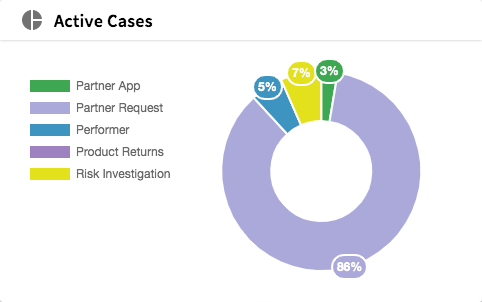

C:/GoDev/src/TCST-Angular/projects/tibco-tcstk/tc-liveapps-lib/src/lib/components/live-apps-active-cases-widget/live-apps-active-cases-widget.component.ts
Home page active cases widget main component

<tcla-live-apps-active-cases-widget></tcla-live-apps-active-cases-widget>| selector | tcla-live-apps-active-cases-widget |
| styleUrls | ./live-apps-active-cases-widget.component.css |
| templateUrl | ./live-apps-active-cases-widget.component.html |
Properties |
|
Methods |
Inputs |
Outputs |
| appIds | |
Type : string[]
|
|
|
The list of LA Application IDs you want to handle |
|
| maxLegendItems | |
Type : number
|
|
Default value : this.maxLegendItems ? this.maxLegendItems : 8
|
|
|
Maximum rows to show in legend before it is hidden (otherwise would take whole widget) |
|
| sandboxId | |
Type : number
|
|
|
sandboxId - this comes from claims resolver |
|
| showHeader | |
Type : boolean
|
|
|
Whether to show the header bar in the widget - eg. favorites on home page (contains icon etc) - if off icons still appear without bar |
|
| showPercentages | |
Default value : this.showPercentages ? this.showPercentages : false
|
|
|
Whether to show percentages or raw case numbers on the doughnut chart |
|
| uiAppId | |
Type : string
|
|
|
The Application ID of the UI (should ideally be unique as it is shared state key) |
|
| ngOnDestroy |
ngOnDestroy()
|
|
Inherited from
LiveAppsComponent
|
|
Defined in
LiveAppsComponent:27
|
|
Returns :
void
|
| activeCasesComp |
Type : LiveAppsActiveCasesReportComponent
|
Decorators :
@ViewChild(LiveAppsActiveCasesReportComponent, {static: false})
|
| activeCaseTypeComp |
Type : LiveAppsActiveCasesForTypeReportComponent
|
Decorators :
@ViewChild(LiveAppsActiveCasesForTypeReportComponent, {static: false})
|
| Public clearSelectedCaseType |
Default value : () => {...}
|
| Public handleCaseTypeSelected |
Default value : () => {...}
|
| Public handleCaseTypeStateSelected |
Default value : () => {...}
|
| Public refresh |
Default value : () => {...}
|
| Public selectedCaseTypeReport |
Type : CaseTypeReportRecord
|
| Protected _destroyed$ |
Default value : new Subject()
|
|
Inherited from
LiveAppsComponent
|
|
Defined in
LiveAppsComponent:23
|
import {Component, EventEmitter, Input, OnInit, Output, ViewChild} from '@angular/core';
import {CaseTypeReportRecord, CaseTypesReport, CaseTypeStateReportStateInfo} from '../../models/tc-live-apps-reporting';
import {BaseChartDirective, Label, MultiDataSet} from 'ng2-charts';
import {ChartType} from 'chart.js';
import {TcLiveAppsReportingService} from '../../services/tc-live-apps-reporting.service';
import {LiveAppsComponent} from '../live-apps-component/live-apps-component.component';
import {map, take, takeUntil} from 'rxjs/operators';
import {LiveAppsActiveCasesReportComponent} from '../live-apps-active-cases-report/live-apps-active-cases-report.component';
import {LiveAppsActiveCasesForTypeReportComponent} from '../live-apps-active-cases-for-type-report/live-apps-active-cases-for-type-report.component';
/**
* Home page active cases widget main component
*
* 
*
*@example <tcla-live-apps-active-cases-widget></tcla-live-apps-active-cases-widget>
*/
@Component({
selector: 'tcla-live-apps-active-cases-widget',
templateUrl: './live-apps-active-cases-widget.component.html',
styleUrls: ['./live-apps-active-cases-widget.component.css']
})
export class LiveAppsActiveCasesWidgetComponent extends LiveAppsComponent {
/**
* sandboxId - this comes from claims resolver
*/
@Input() sandboxId: number;
/**
* The list of LA Application IDs you want to handle
*/
@Input() appIds: string[];
/**
* Whether to show the header bar in the widget - eg. favorites on home page (contains icon etc) - if off icons still appear without bar
*/
@Input() showHeader: boolean;
/**
* The Application ID of the UI (should ideally be unique as it is shared state key)
*/
@Input() uiAppId: string;
/**
* Maximum rows to show in legend before it is hidden (otherwise would take whole widget)
*/
@Input() maxLegendItems: number = this.maxLegendItems ? this.maxLegendItems : 8;
/**
* Whether to show percentages or raw case numbers on the doughnut chart
*/
@Input() showPercentages = this.showPercentages ? this.showPercentages : false;
/**
* ~event selectedCaseType : Case Type selected in vizualization
* ~payload CaseTypeReportRecord : CaseTypeReportRecord object selected from component
*/
@Output() selectedCaseType: EventEmitter<CaseTypeReportRecord> = new EventEmitter<CaseTypeReportRecord>();
/**
* ~event selectedCaseTypeState : Case Type state selected in vizualization
* ~payload CaseTypeStateReportStateInfo : CaseTypeStateReportStateInfo object selected from component (to drive caller to display something different (drill down))
*/
@Output() selectedCaseTypeState: EventEmitter<CaseTypeStateReportStateInfo> = new EventEmitter<CaseTypeStateReportStateInfo>();
@ViewChild(LiveAppsActiveCasesReportComponent, {static: false}) activeCasesComp: LiveAppsActiveCasesReportComponent;
@ViewChild(LiveAppsActiveCasesForTypeReportComponent, {static: false}) activeCaseTypeComp: LiveAppsActiveCasesForTypeReportComponent;
public selectedCaseTypeReport: CaseTypeReportRecord;
public handleCaseTypeSelected = (selected: CaseTypeReportRecord) => {
this.selectedCaseTypeReport = selected;
this.selectedCaseType.emit(selected);
}
public handleCaseTypeStateSelected = (selectedState: CaseTypeStateReportStateInfo) => {
this.selectedCaseTypeState.emit(selectedState);
}
public clearSelectedCaseType = () => {
this.selectedCaseTypeReport = undefined;
}
public refresh = () => {
if (this.activeCasesComp) {
this.activeCasesComp.refresh();
}
if (this.activeCaseTypeComp) {
this.activeCaseTypeComp.refresh();
}
}
}
<div class="tcs-active-case-widget-pane" fxFill fxLayout="column">
<div *ngIf="showHeader" class="tcs-active-case-widget-header" fxLayout="row" fxLayoutAlign="space-between center">
<div fxLayoutAlign="start center">
<mat-icon class="tcs-icon tcs-active-case-widget-icon" svgIcon="ic-active-case-widget-icon"></mat-icon>
<div class="tcs-active-case-widget-header-text">Active Cases</div>
</div>
<div fxLayoutGap="10px">
<div fxFlex fxLayout="row" fxLayoutAlign="start center">
<div class="tcs-type-filter-text" *ngIf="selectedCaseTypeReport" fxLayout="row">
[
<div class="tcs-type-filter-text-highlight">{{selectedCaseTypeReport.caseTypeInfo.label}}</div>
]
</div>
</div>
<mat-icon *ngIf="selectedCaseTypeReport" (click)="clearSelectedCaseType()" class="tcs-icon tcs-icon-active tcs-clear-selected-case-type-icon" svgIcon="tcs-clear-icon" matTooltip="Clear Selected Case Type" matTooltipPosition="left" matTooltipShowDelay="1000"></mat-icon>
</div>
</div>
<div *ngIf="!showHeader" fxLayout="row" fxLayoutAlign="end center">
</div>
<tcla-live-apps-active-cases-report *ngIf="!selectedCaseTypeReport" fxFlex [maxLegendItems]="maxLegendItems" [sandboxId]="sandboxId" [appIds]="appIds" [showPercentages]="showPercentages" [uiAppId]="uiAppId" (selectedCaseType)="handleCaseTypeSelected($event)"></tcla-live-apps-active-cases-report>
<tcla-live-apps-active-cases-for-type-report *ngIf="selectedCaseTypeReport" fxFlex [maxLegendItems]="maxLegendItems" [sandboxId]="sandboxId" [typeId]="selectedCaseTypeReport.caseTypeInfo.id" [appId]="selectedCaseTypeReport.applicationId" [showPercentages]="showPercentages" [uiAppId]="uiAppId" (selectedCaseTypeState)="handleCaseTypeStateSelected($event)"></tcla-live-apps-active-cases-for-type-report>
</div>
./live-apps-active-cases-widget.component.css
.tcs-active-case-widget-pane {
border-radius: 3px;
box-shadow: 0 2px 4px 0 rgba(0, 0, 0, 0.33);
background-color: #ffffff;
}
.tcs-active-case-widget-header {
height: 40px;
border-radius: 3px 3px 0px 0px;
box-shadow: 0 1px 2px 0 #dedede;
padding-left: 20px;
padding-right: 20px;
}
.tcs-active-case-widget-header-text {
font-family: Source Sans Pro;
font-size: 18px;
font-weight: 600;
font-style: normal;
font-stretch: normal;
line-height: 1.5;
letter-spacing: 0.3px;
text-align: left;
color: black;
margin-left: 10px;
}
.tcs-icon.tcs-icon-active:hover {
cursor: pointer;
}
:host ::ng-deep .tcs-icon.tcs-icon-active:hover .svg-content {
fill: #0081cb;
}
.tcs-type-filter-text {
font-family: Source Sans Pro;
font-size: 12px;
font-weight: 600;
font-style: normal;
font-stretch: normal;
line-height: 1.5;
letter-spacing: 0.3px;
text-align: left;
color: black;
margin-left: 10px;
}
.tcs-type-filter-text-highlight {
color: #FF7800;
}